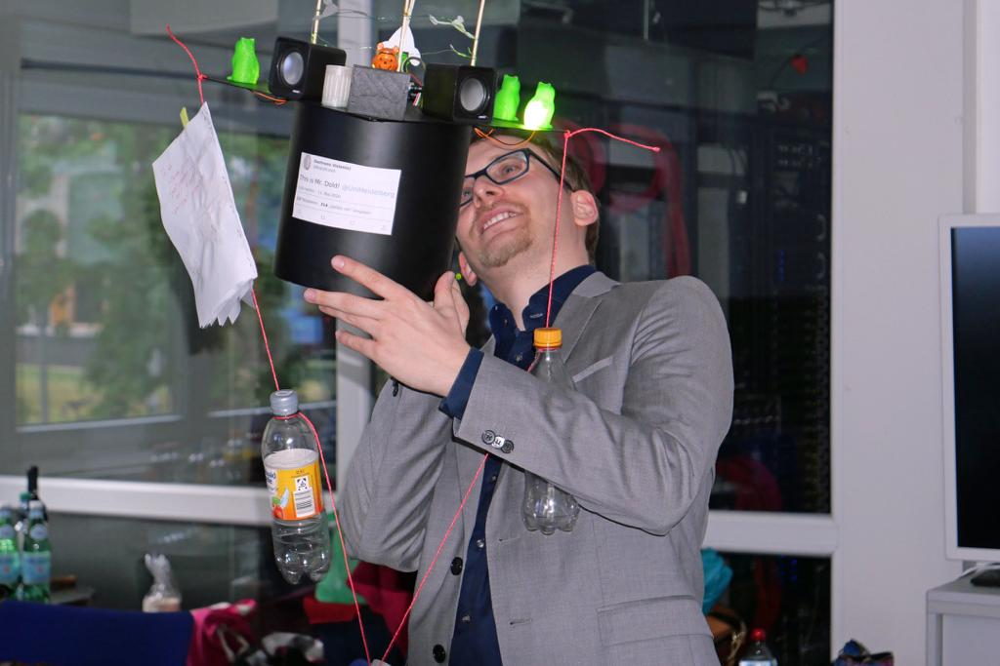

Hi there! My name is Dominik Dold.
I did my PhD in Physics at Heidelberg University, with a focus on brain-inspired computing and computational neuroscience.
During my professional career, I have developed an interest for many topics ranging from physics and statistics to neuroscience up to deep learning, machine learning and data science.
In my thesis, I focused on investigating biological plausible implementations of deep learning algorithms and how these might be realized in the brain. Furthermore, I worked on models of probabilistic spike-based coding and their application on low-energy neuromorphic hardware.
Recently, I joined the Siemens AI lab to research how neuromorphic systems can be utilized in industrial applications.
Interests: machine & deep learning, AI, computational neuroscience, statistics & bayesian inference, physics
Hobbies: piano, guitar, bouldering, reading, traveling, hiking, games & movies
11.05.2020: I passed my PhD defense with honors! :) Below is a picture of me after the defense with the awesome doctoral hat my group built [image courtesy: B. Dold].
19.12.2019: Don't miss this nice featured article "Order from chaos, chaos from order" by the Human Brain Project about the work of my colleagues and me.
1.11.2019: You can spot me on YouTube in this beautiful report by Bloomberg about brain computing!
28.10.2019: Together with two colleagues, I won the first prize at the 2019 International Collegiate Competition for Brain-inspired Computing (ICCBC 2019) in China with our submission "Why spikes? Exploring spike-based Bayesian inference for accelerated neuronal substrates"!
28.02.2019: I had the honor of presenting part of my work at the Cosyne conference in Lisbon as a talk!
Last update: 23.05.2020